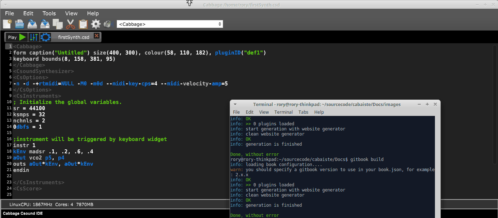

Controlling your Cabbage instrument
The most obvious limitation to the above instrument is that users cannot interact with the underlying Csound instrument. In order to do this we can use a Csound named channel opcode and a Cabbage widget such as a slider. Any widget that needs to interact with Csound must have a channel identifier. To add a widget to your instrument you can enable edit-mode by clicking the 'edit' mode icon on the file tab controls, or by using the Ctrl+e shortcut when the code editor has keyboard focus. Once in edit mode you can right-click the instrument window and insert a new widget, in this case, a hslider.

When one creates a new widget, it is important to give it a unique and easily recognisable channel name using the channel() identifier. Csound will listen for data being sent to that channel through the use of a named channel opcode. The chnget opcode in Csound is used to grab data from a named channel. It is defined in the Csound reference manual as:
kval chnget Sname
'Sname' is the name of the channel, which must match that given to the widget using the channel() identifier. It will be string value enclosed in inverted commas such as "freq", or it can be a previously defined S-type string variable. Don't forget, the same name must be passed to the 'channel()' identifier in the corresponding
Example
<Cabbage>
form size(380, 190), caption("Simple synth"), pluginID("plu1")
hslider bounds(5, 5, 370, 30), channel("gain"), range(0, 1, .8)
keyboard bounds(12, 36, 360, 100)
</Cabbage>
<CsoundSynthesizer>
<CsOptions>
-n -d -+rtmidi=NULL -M0 --midi-key-cps=4 --midi-velocity-amp=5
</CsOptions>
<CsInstruments>
sr = 44100
ksmps = 64
nchnls = 2
0dbfs=1
;instrument will be triggered by keyboard widget
instr 1
kGain chnget "gain"
kEnv madsr .1, .2, .6, .4
aOut vco2 p5, p4
outs aOut*kEnv*kGain, aOut*kEnv*kGain
endin
</CsInstruments>
<CsScore>
f1 0 1024 10 1
f0 3600
</CsScore>
</CsoundSynthesizer>

In the example above we use a 'hslider' widget, which is a horizontal slider. The bounds() identifier sets up the position and size of the widget on screen. Cabbage will only show identifiers which are not the default identifiers. This help keep the Cabbage code concise and easy to read.
When a user moves the slider, the current value/position of the slider is sent to Csound on a channel named "gain". The kGain variable is then updated with the value of the slider. Without the channel() identifier no communication would take place between the widget and Csound.